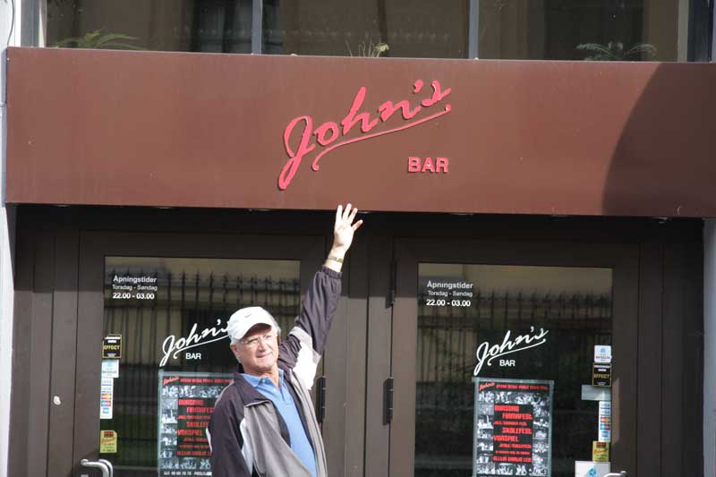

HIOA

Bildet er tatt i går trorlrolrolo
John`s bar er en av de mest populære barene i oslo. Sette er stedet for unge til å være, 20 års aldersgrense alle dager utenom torsdagen da det er 18. Et sted å møte venner for en drink eller kanskje fem! De er Norge mest populære afterski bar, uten skibakke i nærheten. Med John`s, det er alltid god musikk. De spiller alt fra 80-talls musikk til Rock 'n Roll.
Fubar

Fubar sin logo
"Fu bar" er en student bar for Westerdals Oslo ACT i teknologi divisjonen og det naturlige vannhullet for enhver student i området, på grunn av sine lave priser på øl! Mest sannsynlig den billigste ølen du kan kjøpe på en bar i Oslo. Fu bar arrangerer også arrangement som "Oktoberfest" og "Halloween party". Det finnes også et par konkurranser som quiz og beerpong. Fu bar er stedet å være!
Lawo

Dette er Lawo
Lawo er en populær pub i Oslo som er åpent på tirsdager, fredager og lørdager. Lawo ble åpnet i april 2012 og i 2013 Lawo åpnet en bar utenfor for studenter. Du kan leie Lawo hvis du er interessert i å ha en fest eller et Julebord
close
Jonhs bar
velkommen til John`s bar
John`s bar er en av de mest populære barene i oslo. Sette er stedet for unge til å være, 20 års aldersgrense alle dager utenom torsdagen da det er 18. Et sted å møte venner for en drink eller kanskje fem! De er Norge mest populære afterski bar, uten skibakke i nærheten. Med John`s, det er alltid god musikk. De spiller alt fra 80-talls musikk til Rock 'n Roll.
close
Slottsparken

Dammen Kongespeilet ligger i Dronningparken som er en del av Slottsparken bak Slottet.
Slottsparken er Oslo sin sentrale bypark. Parken ligger rundt det kongelige slott og slottsplassen. Parken består av store plener under høye trær, gangveier, alléer og anlagte vannspeil. Slottsparken er et vernet kulturminne, og forvaltes av Slottets gartnere. En del av parken som kalles Dronningparken og er et område som ble etablert som park allerede i 1751.
close